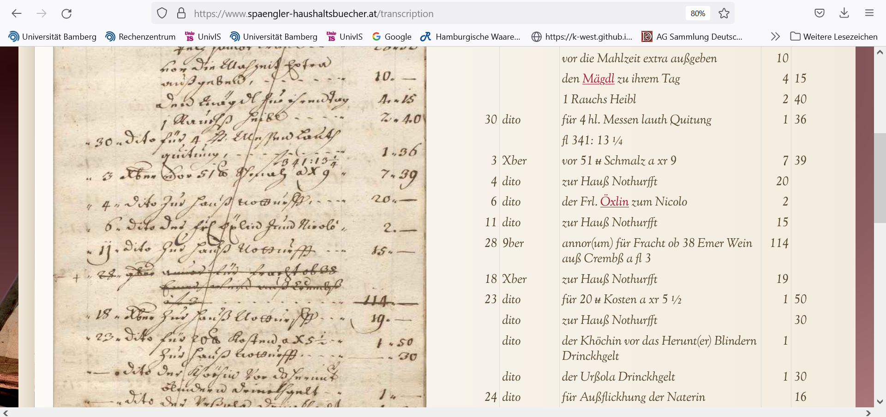
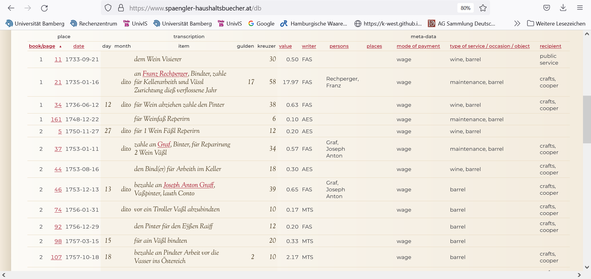
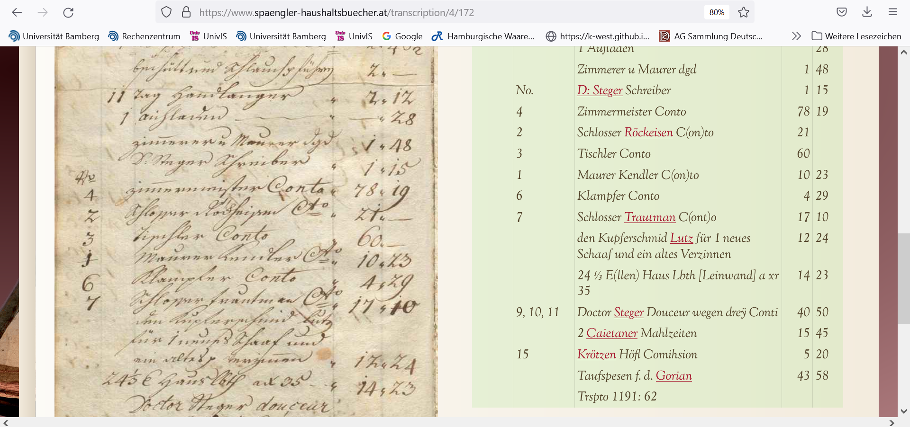
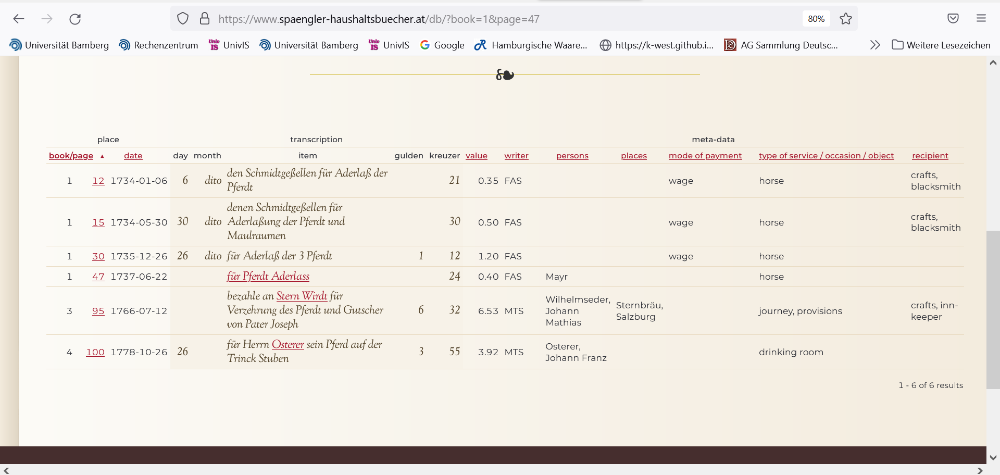
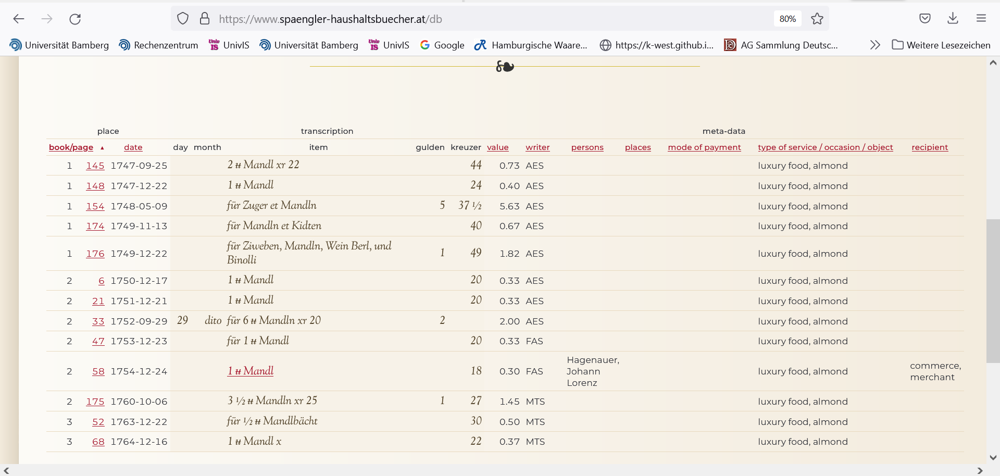
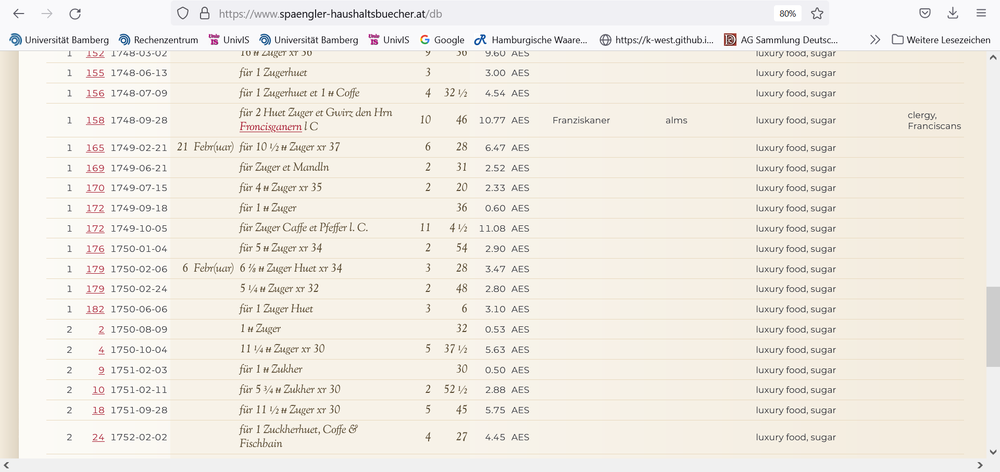
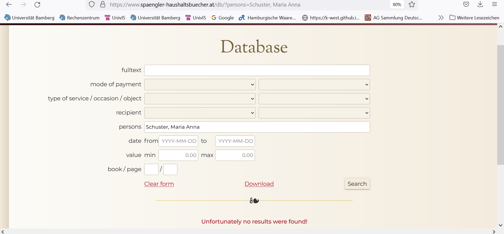
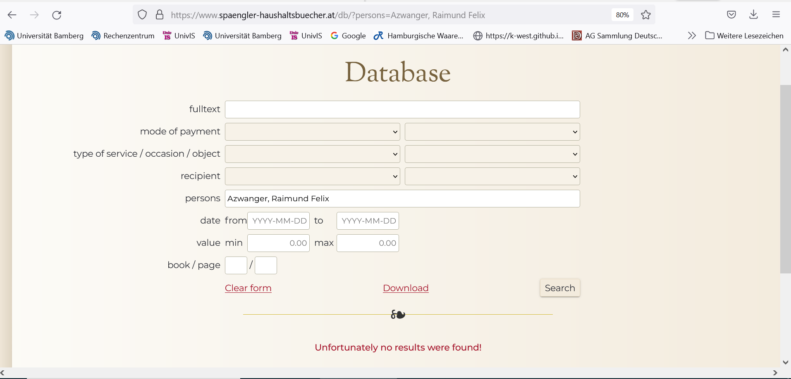
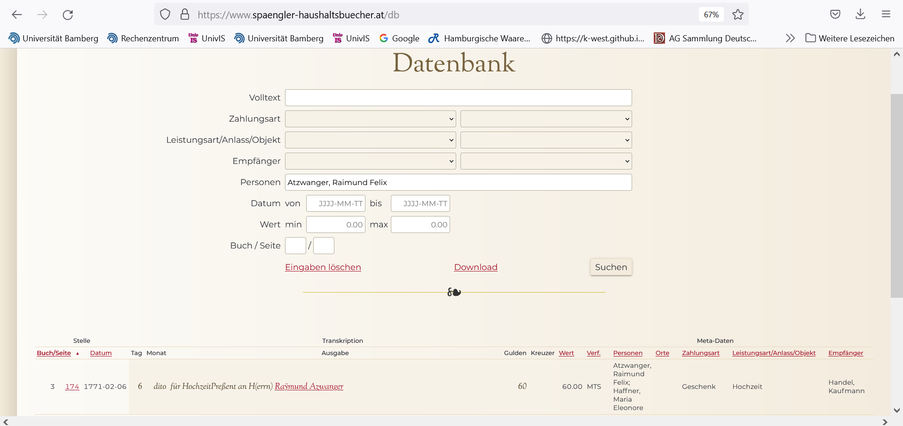

A synergistic approach to non-narrative historical sources. The database and digital edition of the Spängler household account books, 1733–1785
Table of Contents
Abstract
The household account books of the Salzburg merchant family Spängler cover an exceptionally long period and constitute a unique source for the history of consumption in Central Europe in the eighteenth century. This review assesses the diplomatic and database edition that was published by the University of Salzburg and partners in 2020. The review focuses on the synergies that the scholarly digital edition of the household account books aims to establish between the transcription of the books, a database for querying their contents, and a special section containing biographical entries about the actors registered in the books. The review shows where this combination of editing styles is fruitful, especially for non-narrative sources, and where there is scope for further improvements.
Introduction
The Account Books Spängler Online (Ausgabenbücher Spängler Online, short: ASO; Reith and Stöger 2020a) are a digital edition of four private household accounts of the Salzburg cloth and silk merchant Franz Anton Spängler.1 The books are part of the collections of the Salzburg City Archives and were kept by six family members of different generations (Reith and Stöger 2022, 72-74). Reinhold Reith and Georg Stöger (both University of Salzburg) conceptualized, managed, and edited the digital edition of the ASO in collaboration with Luisa Pichler-Baumgartner, Maria Johanna Falkner, and Katharina Scharf (Imprint). The digital edition and the database that supports querying its contents were published online in June 2020. Reith, Stöger, and their colleagues have worked extensively on the Spängler family and the Salzburg merchant community before (Reith et al. 2015; Reith et al. 2016). The Austrian Science Fund (FWF PUD 10) and some additional organizations funded the in extenso digital publication of the ASO, which was carried out in cooperation with the Salzburg City Archives. The technical implementation and design were outsourced to a Munich-based consulting company.2
The ASO pursue the synergistic combination of a full diplomatic transcription of the source with a (relational) database for querying and computing its contents. Their conceptualization differs from that of well-known forms of digital text editions. Rather than an index, commentary, and description, a database linked with the transcription provides the functionalities for exploring the account books. In so doing, the ASO are part of a tradition of publishing non-narrative historical sources online. Previous examples of digital editions organized in a similar way include the municipal account books of Basel (Burghartz 2015; Burghartz, Calvi, and Vogeler 2017) and the (unfinished) digital edition of the account books of the Loitz merchant family of Stettin and Danzig (Lipińska et al. 2019). The ASO project associates itself loosely with the emerging methodological tradition of combining textual editing with a database but gives no details about its technical implementation. Since only few other projects in the realm of economic history have pursued the integration of a scholarly digital edition (SDE, in the ASO: ‘Transcription’) with a relational database for querying its contents (here: ‘Database’), this is quite unfortunate. This review pays special attention to the interaction between transcription and database of the ASO and highlights the strengths, challenges, and weaknesses of this approach.
Subject and content of the edition
The household account books document the daily expenses of members of the Spängler family in Salzburg. Their expenses cover a wide variety of topics, ranging from birthday presents for family members to wages paid to personnel, maintenance costs for carriages, expenditures for food supplies, and much more. The source offers much detailed information about the cost of living and wages earned in Salzburg during a significant part of the eighteenth century. Within the historiography of household account books, which took off in the 1970s (Reith and Stöger 2022, 72-73), the ASO occupy an exceptional position. Covering more than 50 years from 1733 until 1785, they have a broader scope than earlier editions of private household account books in the German realm (for an overview see Pichler-Baumgartner 2016). They contribute a wealth of microdata to ongoing research about consumption patterns, household expenditures, and social and family relations – topics that are at the core of Reith and Stöger’s research (see e.g. Reith et al. 2015; Reith et al. 2016; Stöger 2019; Reith and Knapp 2021). The ASO also stand out against the bulk of the known private household account books, which have their origins in the fifteenth and sixteenth centuries (see Reith and Stöger 2022, 72-73; Pichler-Baumgartner 2016, 63-77). Thus, the ASO make an important contribution to the history of consumption and everyday life in the eighteenth century (Reith and Stöger 2022, 74).
The ASO publish the four household account books of the Spängler family. The first book (184 pp.; each scan is one page) covers the period from January 1733 to June 1750; the second book (186 pp.) runs from June 1750 until January 1761; the third (188 pp.) from January 1761 to January 1772 and the fourth (180 pp.) from January 1772 to May 1785. Each book was scanned from front to cover. Including the pages before the first bookkeeping entry, which are given a negative page number in the digital edition, the total number of scans is 754. The series is almost without gaps. The editors indicate only three brief interruptions after the death of each of Franz Anton Spängler’s three wives. According to the editors, the transcription and database contain about 21,000 bookkeeping entries. No sampling procedures have been applied. The introduction to the digital edition contains a general bibliography. Additionally, each of the biographical entries in the web application contains extensive references to literature, published and archival sources. For some of the biographical entries, portraits of the persons are included in the web application.
The ASO make the data accessible in three different ways, starting from the ‘Transcription’, the ‘Database’, or a comprehensive list of ‘Persons’ mentioned in the source. Alongside the ‘Introduction’, these are the main menu items on the homepage of the digital edition. The first section of the web application, ‘Transcription’, provides an enriched transcription of the ASO, which is flanked by scans of the original source. In the transcribed text, the names of persons are linked to biographical entries, which open in a pop-up window when clicked. The list of biographical entries, ‘Persons’, can be accessed separately as well and thus constitutes the second way of accessing the data in the ASO. A simple mouse-click queries the person against the database and immediately shows all mentions of this person in the database entries. The entries themselves provide links to the corresponding book/page in the ‘Transcription’ section. In addition to searches based on personal names, the ‘Database’ section also supports full-text search as well as list-based searches for the categories ‘mode of payment’, ‘type of service / occasion / object’, and ‘recipient’. The ‘Database’ section also supports queries based on date (from, to), value (min, max), and book/page. The latter can be used as a means to access specific pages in the transcription.
Aims and Methods
The introduction to the web application and a recent publication clearly define the aims of the ASO (Reith and Stöger 2022). However, only two sections in the introduction (“About the text edition and the database” and “Edition guidelines”) contain information about the methods applied during the process. Most of the explanation deals with the database and the biographies of the persons mentioned in the account books.

This example page highlights a few particularities of the transcription. First, strikethrough of the entire page is not added to the transcription, because it is visible on the scan. Second, entries that were crossed out in the account books are transcribed as well, but they are not marked as such in the transcription. Moreover, they are not included in the database to avoid incorrect calculations. Third, abbreviations are written in full, using parentheses to add the abbreviated parts of the word, e.g. annor => annor(um). For some words, the abbreviations were retained, the “Edition guidelines” indicate that “(…) [t]he abbreviations and spellings of Sa (for Summa), pr (for per) and zus (for zusammen, altogether) were retained in the transcription.” It is somewhat regrettable that legitimate concerns about the legibility of the transcription were not extended to the currencies and measures in the text. In the case of currencies, “(…) the standard units x (Kreuzer) and f (Gulden) were substituted by xr and fl to facilitate legibility.” (Reith and Stöger 2020b). Furthermore, as indicated in the section “Remarks about the currency and standard units”, “[p]ayments in ducats were marked with the abbreviation # [hashtag – W.S.] and the converted value (c. 5 fl) was recorded.” (Reith and Stöger 2020b) The sign used for the pound is u (u with strikethrough) (see Introduction). This was probably a pragmatic solution to avoid having to deal with the complex issue of the visualization of pre-modern signs for currencies and measures, for which – if at all – Unicode equivalents are only scarcely available, although the pound sign would not have posed any particular problems.
In contrast with other efforts to improve legibility and computability of the source, abbreviated measures are left untouched. The web application only provides a general description of its metric equivalents in the introduction. Since the account books are a source for economic historians with an interest in the history of consumption, this is remarkable. Looking more closely at the weights and measures in the source, some issues become apparent that have an impact beyond the realm of historical metrology. For example, one may wonder why ‘barrel’ (Fass) is not described in the section on weights and measures, although it appears prominently in the list of keywords.

Publication and presentation
The user interface is clear and intuitive. The main access methods of the scholarly digital edition correspond to the main sections of the web application. The interface is relatively easy to navigate as soon as the user understands how the different sections are interconnected. The names in the ‘Transcription’ are linked to a pop-up window with the corresponding information from the ‘Persons’ section. The names in the ‘Persons’ section are linked to the ‘Database’ section. In the ‘Database’ section, book and page info link to the ‘Transcription’ section, and a mouse-click on a person’s name in the ‘Transcription’ makes the corresponding biographical entry from the ‘Persons’ section pop-up on the screen.
The ‘Database’ section

The value search allows to enter minimum and/or maximum values (with two decimals) to select expenses within a certain range, but caution is necessary, because “(…) [e]ntries lacking monetary quatntities [sic!] and pure text entries (forwarding entries or subtotals) are not part of the database.” (Reith and Stöger 2020b). The full-text, keyword and person searches are discussed in more detail below.

Full-text search does not differentiate between lowercase and uppercase. It supports the use of percentage (%) and underscore (_) wildcards to match any number of characters starting from zero (%) or exactly one character (_). For example, ‘Schmid%ge_elle’ returns 11 results, including ‘Schmidtgeselle’ and ‘Schmidtgeßelle’, but also ‘Schmidt Geßelle’. Unfortunately, the website provides no information about the use of wildcards. Therefore, this functionality is easily overlooked. Full-text search comprises the transcription as well as the metadata fields ‘person’ and ‘places’. Most of the other metadata fields can only be searched via the keyword lists, in which the editors clearly invested a lot of time and effort. This means that the metadata term ‘wine’, which is a keyword listed in ‘type of services / object / occasion’ returns no results when used in a full-text search. However, since the German word for wine often occurs in the transcription, a full-text search for ‘Wein’ does indeed return 244 results. Given the extent of the keyword lists, it is useful to check if it already comprises your search term.
Keyword search is available for three categories: ‘mode of payment’, ‘type of service / occasion / object’, and ‘recipient’. Via a link in the introduction, the full German-English list of keywords in these categories is available for download. Many keywords contain two levels separated by a comma in the downloadable list, e.g. ‘wage, beer money’ or ‘education, newspaper’. To deal with these levels, the search mask provides two fields from which keywords can be chosen. When keyword data on the second level is available, the choices appear as a sub-list in the second field. In the opposite case, the second field in the search mask disappears. For the keyword ‘wage’ there are six second-level keywords (‘beer money’, ‘bonus payment’, ‘annual wage’, ‘wage benefit for board’, ‘daily wages’, ‘gratuity’). For some reason, ‘wage benefit for board’ is also listed as a first-level keyword. Second-level keyword is clearly optional: of 5,690 entries with mode of payment ‘wage’, 285 have the second-level keyword ‘annual wage’, 151 ‘beer money’, 48 ‘bonus payments’, 356 ‘daily wages’, 369 ‘gratuity’ and 37 ‘wage benefit for board’. Note, however, that ‘wage benefit for board’ as first-level keyword generates 43 results.
 
One very large category is ‘food’. It comprises 7,271 entries. The first-level category food has 24 second-level keywords – from baked goods, beer and bread to vegetables, vinegar and wine. As before, the categorization may be a bit misleading at first. Many of the entries that are categorized as ‘food, baked goods’ document the payment of wage supplements or gratuities (Ger. Trinkgeld) to the baking personnel (‘recipient’ = ‘servants’). The search mask does not facilitate excluding certain categories from the query. However, when putting the query results in descending order, which is a functionality that is offered for almost all fields in the display of query results, it is possible to separate a list of actual ‘baked goods’ from the remaining entries. Further processing is easier in an Excel sheet containing the query results, which can be downloaded from the database section.
The ‘Persons’ section
The ‘Persons’ section is an essential part of the ASO. According to the editors, it “(…) lists over 500 individuals and families [and] (…) provides information for local research as well.” (Reith and Stöger 2022). The ‘Persons’ section adds much value to the database. Even ‘unknown’ persons are included. Wherever possible, the scarce information in the account books is used to describe their identity. For other, better-known persons, extensive biographical entries including a number of portraits are provided, which are accessible from the ‘Transcription’ and ‘Database’ sections as well. The ‘Persons’ section links to the ‘Database’ section. When clicking on the name of a person in the alphabetical list of biographical entries, this full name is copied into the field ‘persons’ in the ‘Database’ section, where it matches with the person’s metadata. Although this is an excellent way to explore and query the database, there are a few issues with its implementation in the ASO. For several persons in the ‘Persons’ section, the database query returns no results. Vice versa, for quite a few names in the Excel download of the database (more on downloading below), no corresponding entries were found in the ‘Persons’ section. A few explanations could be found for these inconsistencies.
Where persons were found in the ‘persons’ metadata of the ‘Database’, but not in the ‘Persons’ section of the web application, the reasons are either the person being unknown or occurring rarely. A systematic comparison of the Excel downloads of (almost) the entire database with the alphabetical list of ‘persons’ revealed the names of 89 persons that registered in the database with their metadata, but for which no corresponding biographical entry could be found in the ‘Persons’ section. For example, the Excel download contains one entry concerning ‘Graßpointner, Mathias’. The ‘Persons’ section, however, lists ‘Großpointner, Mathias’ and does not find the other entry for which the metadata are different. Often, minor inconsistencies in the spelling of names lead to such non-matches. Another example is that of Maria Theresia Obenaus, who is found with ‘persons’ metadata in the database, but has no corresponding entry in the ‘Persons’ section (neither is her name linked in the ‘Transcription’). These entries in the account books do not appear in the query results, when the ‘Persons’ section is taken as starting point.

 
Download options
The web application does not contain any technical interfaces. Download options have some limitations. It is impossible to download the entire database directly; the number of entries that can be downloaded at once is topped off at 5,000. Moreover, in the English version of the website the download option only works when at least some data is entered in the search mask, for example book and page numbers, or dates. With some limitations (not every entry has a date), the date can be used as a means for downloading (almost) the entire database in a few steps. Query results can be downloaded as Excel files that contain all the items in the database display. The Excel sheet also contains an extra field containing the number of the scan and one containing the row number of the entry. The number of the scan is preceded by a letter indicating the book (a = 1, b = 2, c = 3, d = 4). Row numbers continue across the different account books, starting with 1 for the first row of book 1 and ending with 22,951 for the last row of book 4. Since rows without values are not included in the database (see Introduction), the Excel sheet contains 21,146 rows. Scans can be downloaded one by one from the web application, but the quality is not high (96 x 96 dpi). No information is given about the rights and restrictions for the reuse of text and images downloaded from the website.
Conclusions
The ASO follow a digital paradigm and can be considered a scholarly digital edition. The ASO combine a diplomatic with a database edition to improve the analysis of the source from the perspective of the history of consumption. The editorial guidelines are rather concise, but offer enough information about the transcription of the account books. More in-depth information about the structure and functions of the database, on the other hand, would have been helpful.
A major strength of the ASO is its clear and intuitive structure that makes it easy to explore the source from a variety of perspectives. Despite its inconsistencies, the ‘Persons’ section, which provides additional biographical information about many people in the account books, is a major asset of the work. The way in which the transcription and database sections of the web application are connected, has its limitations, but the merits clearly prevail. The ASO provide an excellent example of how relatively straightforward digital techniques, such as the use of hyperlinks, are leveraged to the benefit of a synergistic digital edition. This method could be useful for other non-narrative sources besides the household account books. Therefore, it is unfortunate that the ASO remain silent about the technical side of the project.
Since its editors embed their work primarily in German-language historiography, there is much scope for future research with the ASO. For example, it would be interesting to compare the format and contents of the ASO with examples of household books in, for example, Great Britain. At first sight, it seems that eighteenth-century household books are quite common in British historiography. Researchers have used them to discuss consumer behavior, but also to examine changes in fashion in the eighteenth century (Garry 2016), the role of second-hand markets in private households, and issues of masculinity and the image of women (Vickery 2006; Harvey 2012). The ASO open doors for comparative analyses on these and related topics. Given the obvious value of the source, its methods and web application, it would be recommended for the editors to get rid of the minor inconsistencies in the application, especially in the ‘Persons’ section, and to publish information about the technologies used for preparing and publishing this fascinating digital edition.
Bibliography
- Burghartz, Susanna, ed. 2015. Jahrrechnungen der Stadt Basel 1535–1611 – digital. Basel / Graz. https://hdl.handle.net/11471/1010.1.
- Burghartz, Susanna, Sonia Calvi, and Georg Vogeler, eds. 2017. Urfehdebücher der Stadt Basel – digitale Edition. Basel / Graz. https://hdl.handle.net/11471/1010.2.1.
- Garry, Mary Anne. 2016. “Sedan Chairmen in eighteenth-century London.” The Journal of Transport History, 37 (1): 45-63.
- Harvey, Karen. 2012. The Little Republic. Masculinity & Domestic Authority in eighteenth-century Britain. Oxford: Oxford University Press.
- Lipińska, Aleksandra, Bettina Schröder-Bornkampf, Marcin Grulkowski, Filip Hristov, and Giulia Simonini. 2019. GeldKunstNetz. Rechnungsbücher der Stettin-Danziger Kaufmannbankiersfamilie Loitz. Kommentierte Online-Edition und Netzwerkanalyse. 30. November 2019. Open Data LMU. https://doi.org/10.5282/ubm/data.317.
- Pichler-Baumgartner, Luisa. 2016. ““Halte er nur alles clar und deitlich”. Haushaltsbücher als Quelle der Sozial-, Wirtschafts- und Kulturgeschichte.“ In Haushalten und Konsumieren. Die Ausgabenbücher der Salzburger Kaufmannsfamilie Spängler von 1733 bis 1785, edited by Reinhold Reith, Luisa Pichler-Baumgartner, Georg Stöger and Andreas Zechner, 63-77. Salzburg: Stadtarchiv.
- Reith, Reinhold and Georg Stöger. 2022. “Exploring and Presenting Eighteenth-Century Private Consumption.“ Vierteljahrschrift für Sozial- und Wirtschaftsgeschichte, 109 (1): 72-86. https://doi.org/10.25162/vswg-2022-0003.
- Reith, Reinhold and Elias Knapp. 2021. “Zum Potential der Nachlassinventare von Kaufleuten für die Handels- und Konsumgeschichte. Salzburg im 18. und frühen 19. Jahrhundert.“ Österreichische Zeitschrift für Geschichtswissenschaften, 32 (3): 202-215. https://doi.org/10.25365/oezg-2021-32-3-11.
- Reith, Reinhold and Georg Stöger. 2020a. Account Books Spängler Online. https://web.archive.org/web/20220721110558/https://www.spaengler-haushaltsbuecher.at/.
- Reith, Reinhold and Georg Stöger in collaboration with Luisa Pichler-Baumgartner, Maria Johanna Falkner and Katharina Scharf (eds.) 2020b. “Introduction”. Account Books Spängler Online. https://web.archive.org/web/20220721105854/https://spaengler-haushaltsbuecher.at/introduction.
- Reith, Reinhold, Luisa Pichler-Baumgartner, Georg Stöger, and Andreas Zechner, eds. 2016. Haushalten und Konsumieren. Die Ausgabenbücher der Salzburger Kaufmannsfamilie Spängler von 1733 bis 1785. Salzburg: Stadtarchiv Salzburg.
- Reith, Reinhold, ed. 2015. Das Verlassenschaftsinventar des Salzburger Tuch- und Seidenhändlers Franz Anton Spängler von 1784. Einführung und kommentierte Edition in Verbindung mit Andreas Zechner, Luisa Pichler, Doris Hörmann, Jürgen Wöhry and Florian Angerer. Salzburg: Stadtarchiv Salzburg.
- Stöger, Georg. 2019. “Zwischen Konsumieren und Produzieren. Dinge und ihre Nutzer*innen im 18. Jahrhundert.“ Österreichische Zeitschrift für Geschichtswissenschaften, 30 (1): 124-143.
- Vickery, Amanda. 2006. “His and Hers: Gender, consumption and household accounting in eighteenth-century England.” Past & Present, Supplement 1: 12-38.
Notes
- Note that the name of the website says ’Haushaltsbücher’, whereas the descriptive title of the website specifies that we are dealing with ‘Ausgabenbücher’, in which only expenses were recorded. In English, the distinction disappears and the source is described as ‘(household) account books’. ↑
- Insofar as this can be inferred from the web application itself, the technologies used for presenting the content on the web are CSS and JavaScript. The backend technology used for the different sections of the web application – ‘transcription’, ‘database’, and ‘persons’ – is not specified. ↑
- The editors indicate that “[t]he addition of punctuation and completions of shortened declinations, articles and word endings as well as consonants (indicated in the original as a double underlining) were made without comment for the sake of better fluency.” (Introduction). ↑
@article{spaengler,
author = {Scheltjens, Werner},
title = {A synergistic approach to non-narrative historical sources. The database and
digital edition of the Spängler household account books, 1733–1785},
journal = {RIDE – A review journal for digital editions and resources},
number = {18},
year = {2023},
doi = {10.18716/ride.a.18.1},
url = {https://doi.org/10.18716/ride.a.18.1},
}TY - JOUR
AU - Scheltjens, Werner
TI - A synergistic approach to non-narrative historical sources. The database and
digital edition of the Spängler household account books, 1733–1785
T2 - RIDE – A review journal for digital editions and resources
IS - 18
PY - 2023
DA - 2023/09
DO - 10.18716/ride.a.18.1
UR - https://doi.org/10.18716/ride.a.18.1
PB - Institut für Dokumentologie und Editorik e.V.
LA - en
ER - Scheltjens, W. (2023). A synergistic approach to non-narrative historical sources. The database and
digital edition of the Spängler household account books, 1733–1785. RIDE – A review journal for digital editions and resources, (18). https://doi.org/10.18716/ride.a.18.1Scheltjens, Werner. "A synergistic approach to non-narrative historical sources. The database and
digital edition of the Spängler household account books, 1733–1785." RIDE – A review journal for digital editions and resources, no. 18, 2023. https://doi.org/10.18716/ride.a.18.1.Scheltjens, Werner. "A synergistic approach to non-narrative historical sources. The database and
digital edition of the Spängler household account books, 1733–1785." RIDE – A review journal for digital editions and resources, no. 18 (2023). https://doi.org/10.18716/ride.a.18.1.